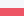

Planet Blupi (Planet Eggbert)
A delirious spell-binding game
Planet Blupi (known as Planet Eggbert too) is a strategy and adventure game. It subtly blends action with thought-provoking challenges. Behind the quiet and gentle facade, you'll enjoy a fascinating diversion full of surprises. Planet Blupi is ideal for ages 12 to 99.
The game was freed (source code and all art files) and ported to all major platforms (Linux, macOS and Windows) for it's 20th anniversary.
The current release (that you can download from this website) has mostly the same look and functionalities that the original version of 1997 but with a portable code and some bugfixes.
Scroll down or click here in order to download the game.
 Une aventure envahissante et complètement délirante
Une aventure envahissante et complètement délirante
Planète Blupi (connu aussi sous sous l'appellation Planet Blupi et Planet Eggbert) est un jeu d'aventures pour PC, mélangeant subtilement l'action et la réflexion. Son style sympathique et écolo n'en cache pas moins un jeu passionnant plein de rebondissements. Il vise la tranche d'âge de 12 à 99 ans.
Le jeu a été libéré (code-source et tous les fichiers artistiques) ainsi que porté pour toutes les plateformes majeures (Linux, macOS et Windows) pour son 20e anniversaire.
La version actuelle (qui peut être téléchargée depuis ce site internet) a pratiquement le même aspect ainsi que les mêmes fonctionalités que la version originale de 1997, avec un code-source portable et des corrections de bugs.
Faîtes rouler la molette vers le bas ou cliquez ici afin de télécharger le jeu.
Languages / Langues
- English
- US English
-
French
(Français)
-
 German
(Deutsch)
German
(Deutsch)
- Italian (Italiano)
- Polish (Polski)
- Turkish (Türkçe)
- Portuguese (Português)
- Hebrew (עברית)
- Arabic (العربية)
- Spanish (Español)
Scenario
Blupi leads a quiet life on his planet until a strange meteorite crashes in a desert area.
Only much later does Blupi realise that his crops are
being destroyed by huge spiders. Though he's always been a
tough and healthy type, a weird virus has been causing him to
sneeze and cough a lot lately.
What's going on ?
In fact, the meteorite is a spaceship. The only passenger on board is a mean-looking robot. Its goal is to build factories that produce a variety of aliens. Help Blupi use the resources of his beautiful planet to chase these invaders away !
Scénario
Blupi vit tranquillement sur sa planète jusqu'à l'arrivée d'une étrange météorite qui tombe dans une région désertique.
Ce n'est que bien plus tard que Blupi s'aperçoit que
ses cultures sont saccagées par de grosses araignées. Alors
que Blupi a toujours joui d'une santé de fer, il lui arrive
maintenant d'éternuer et d'attraper une étrange maladie.
Que
se passe-t-il ?
Eh bien, l'étrange météorite est en fait un vaisseau spatial qui transporte un robot très spécial. En effet, celui-ci construit des usines, qui produisent à leur tour différents ennemis. Blupi doit dès lors exploiter à fond les ressources de sa planète pour parvenir à chasser ces intrus ...
The game
There are some 30 missions to figure out, ranging from really easy to completely mind-boggling.
The goals of the missions are varied: to grow food, to find a strategic point, to eradicate aliens, etc... You may need just one Blupi to accomplish the missions, or dozens !
- Help Blupi to explore
- Cut trees to produce boards and planks
- Transport various materials
- Build houses
- Grow tomatoes
- Pick flowers
- Survey the ground
- Extract iron ore
- Devise traps
- Throw bridges
- Cure friends
Le jeu
Le jeu est composé d'environ 30 missions, qui permettent de progresser dans une aventure de plus en plus passionnante et complexe.
Une mission peut faire appel à un seul Blupi, ou à
quelques dizaines ! Les buts des missions sont variés:
cultiver une certaine quantité de nourriture, atteindre un
endroit stratégique, éliminer tous les ennemis, etc.
Voici quelques exemples d'actions :
- Explorer
- Abattre des arbres pour produire des planches
- Transporter différents matériaux
- Construire divers bâtiments
- Cultiver des tomates
- Cueillir des fleurs
- Sonder les sols
- Extraire du minerai de fer
- Fabriquer des pièges
- Construire des ponts
- Soigner ses confrères
A cool interface
Planet Blupi's interface is designed to remain as discreet as possible, so you can have fun and concentrate on the game. There's no need for long strokes across the screen with the mouse. You don't waste time choosing buttons and artifacts from a large display somewhere out of reach.
A small zone on the left gives general information about the mission in progress. When you want Blupi to do a specific action, just click on the right spot in the scenery. A palette of actions available pops up, and you can make your choice. Actions are smooth and quick.
A limited series of optional exercises can be used to learn how to play the game.
Interface
Le but de l'interface de Planète Blupi est de se faire oublier, pour laisser la place au plaisir de jouer. Lorsque vous voulez assigner une action à Blupi, il suffit de cliquer à l'endroit voulu dans le décor. Une petite palette d'actions apparaît alors directement sous la souris. Il ne reste alors qu'à déplacer légèrement la souris et à cliquer.
Plus besoin de ramener la souris jusqu'au bord de l'écran. Il en découle une plus grande rapidité d'action. De plus, les actions présentées sous la souris sont celles qui peuvent être utilisées à cet endroit.
Une petite dizaine d'exercices facultatifs permettent d'apprendre le fonctionnement du jeu et de se familiariser avec l'interface.
A large selection of decors
Blupi's planet has 4 distinct areas :- Open prairie
- Deep woods
- Desert
- Snowy landscape
Each mission is carried out in a vast area of 40'000 cells (200x200 square elements).
You can even allow you to draw the scenery, set the goals and create your own missions.
Des
décors variés
Blupi évolue dans quatre régions correspondant à des
décors entièrement différents, qui donnent des ambiances
variées :
- Prairie
- Forêt
- Désert
- Forêt enneigée
Quelques séquences vidéo agrémentent la fin d'une mission par exemple. Un éditeur de mission permet de construire ses propres missions, en dessinant les décors et en choisissant les buts à atteindre.
What's new since 1997
This new version (since v1.9) is directly based on the last public release published in 1997. The rewrite was done in order to remove completely the dependencies on MS Windows and DirectX. The old code is based on Visual Studio 5 (a very old environment and compiler). This new version is based on the SDL2 libraries and supports at least three major operating systems and is built only with GCC or Clang. The MSVC toolchain is no longer supported because the dependencies handling is more painful that using MSYS2 under Windows.
ChangeLog v1.15
| New | Use TTF fonts for all languages; the legacy mode can be used to restore the sprites based fonts (the new translations are not supported by the legacy mode) |
|---|---|
| New | Add Spanish and Arabic translations |
| Fix | Prevent possible time bomb duplication (use --restore-bugs to enable this bug) |
| Fix | Remove potential crash with time bomb |
| Fix | No more regression with NUMPAD navigation |
| Fix | Work around some minor sound bugs |
ChangeLog v1.14
| New | Add Portuguese, Turkish and Hebrew translations |
|---|---|
| New | Polish translations 100% completed |
| New | Improve a bit the performances |
ChangeLog v1.13
| New | Add wide screen support (it uses the desktop resolution with scaling) |
|---|---|
| New | Add a new --legacy option for starting the game in 640×480 (original) |
| New | Add more options to the global settings screen (legacy mode and anti-aliasing) |
| New | Mouse right click on flowers is working |
| New | Use SDL_kitchensink 1.x that adds Android support for videos (maybe more) |
| New | Add emscripten support (experimental online version of the game is available) |
| New | Add a man page for Linux (see planetblupi/planetblupi.1.ronn) |
| Fix | Fix OpenGL ES2 support (very useful for Android support) |
| Fix | Fix glitch where a dead Blupi or enemy can be seen when the screen is moving |
| Fix | Disable smooth screen scroll with demo recording and playing |
| Fix | It's no longer possible to build a mine without prospecting (see --restore-bugs) |
| Fix | Fix a lot of old bugs with mouse hovers |
| Fix | Fix old bug where it was possible to save a game which was never played |
| Fix | When a Blupi or an enemy is killed by an explosion, the sound is stopped immediately (it was a common issue with a lot of gamers) |
| Fix | Fix the sound with the help panel (only on mouse up) |
| Fix | Fix the ALSA support when PulseAudio is not available (only on Linux) |
ChangeLog v1.12
| New | When a game is paused (by ESC), pressing ESC again will return to the game instead of exiting (it prevents to lose your current game) |
|---|---|
| New | Add all Polish text translations (sounds still missing) |
| New | The scrolling is smooth by default (like Blupimania), you can restore the previous behaviour by setting the screen scrolling speed to 3 |
| New | Release for x86-32 version of Windows (>= Windows Vista) |
| New | Replace by default all midi music files by ogg/vorbis files (same music with all OS), it can be changed with the global settings screen |
| New | Add a way to force an other driver for the renderer, see --driver option |
| New | The window zoom and the fullscreen mode are saved in the user preferences |
| Fix | Improve support for multi-displays systems |
| Fix | Fix a lot of buggy animations with the disciple (helper robot) |
| Fix | Fix buggy textures on macOS when the game is not loaded in fullscreen |
| Fix | Fix paving stones goal with a number of blupi different of 4 |
ChangeLog v1.11
| New | Add full Italian language support |
|---|---|
| Fix | Fix a regression with the difficult skill level (it was possible to win some missions without playing) |
ChangeLog v1.10
| New | Add --zoom command line argument and config.json setting for running the game with the size window factor of 2 (when windowed) |
|---|---|
| New | Increase the difficulty for the difficult skill level, see here |
| Fix | Fix the bug where it was possible to carry a trapped enemy (see --restore-bugs option) |
| Fix | Fix editor bug where it was possible to have tower rays with all buildings (see --restore-bugs option) |
ChangeLog v1.9
| New | Whole source-code and art files under GPL3+ license |
|---|---|
| New | Add support of GNU/Linux and macOS |
| New | Add a partial support for recording a mission (see --help option) |
| New | Handle decor shifting with multiple keys (arrows) |
| New | Integrate all languages via gettext (no more separated executable by language) |
| New | Add a checker for new versions (text update blinking on the home screen) |
| New | Add a new global settings screen |
| New | Use a static build (should work for years on all operating systems) |
| Fix | Fix cases where a Blupi can disappear |
| Fix | Fix ghost Blupi, he can build a tower or a wall only if it's energy is at least greater or equal 1/2 |
| Fix | Fix bug where Blupi can enter in a workshop without action |
| Fix | Fix energy leaking when Blupi is walking to build a tower or a wall |
| Fix | Fix tooltip with the electro factory |
| Fix | Fix the disciple when it's trying to block the electro factory |
| Fix | Fix the bug of object duplicating (see --restore-bugs option) |
| Fix | Fix the bug where it's possible to take the control of an enemy (see --restore-bugs option) |
| Fix | Fix a menu buttons bug with the factory |
Quoi de
neuf depuis 1997
Cette nouvelle version (à partir de v1.9) est directement basée sur la dernière version qui a été publiée en 1997. La réécriture a été réalisée afin de supprimer complètement les dépendances sur MS Windows and DirectX. L'ancien code-source est basé sur Visual Studio 5 (un très ancien environnement de développement). Cette nouvelle version est basée sur les bibliothèques SDL2 et supporte au moins les trois systèmes d'exploitation principaux. Le jeu est compilé uniquement avec GCC our Clang. La suite d'outils MSVC n'est plus supportée à cause de la complexité que celà rajoute par rapport à l'utilisation d'MSYS2 sous Windows.
Journal v1.15
| Nouveauté | Exploite des polices TTF pour toutes les langues; le mode "ancien" permet de restaurer les polices basées sur des images (les nouvelles traductions ne sont pas supportées par le mode "ancien") |
|---|---|
| Nouveauté | Ajout des traductions espagnole et arabe |
| Correctif | Rend impossible d'effectuer une duplication d'une bombe (voir l'option --restore-bugs pour réactiver) |
| Correctif | Corrige la régression avec la navigation par NUMPAD |
| Correctif | Contourne quelques défauts mineurs avec des sons |
Journal v1.14
| Nouveauté | Ajout des traductions en portugais, turque et hébreu |
|---|---|
| Nouveauté | Les traductions en polonais sont complètes à 100% |
| Nouveauté | Améliore un peu les performances |
Journal v1.13
| Nouveauté | Ajoute la prise en charge des écrans panoramiques (celà utilise la résolution du bureau avec du redimensionnement) |
|---|---|
| Nouveauté | Ajoute une nouvelle option --legacy permettant de démarrer le jeu en 640×480 (original) |
| Nouveauté | Ajoute plus d'options dans l'écran des réglages généraux (mode "ancien" et anti-crénelage) |
| Nouveauté | Le clic droit fonctionne désormais aussi sur les fleurs |
| Nouveauté | Utilisation de SDL_kitchensink 1.x qui ajoute la prise en charge des vidéos sous Android (peut-être plus encore) |
| Nouveauté | Ajoute la prise en charge d'emscripten (une version en ligne et expérimentale du jeu est disponible) |
| Nouveauté | Ajoute une page de manuel pour Linux (voir planetblupi/planetblupi.1.ronn) |
| Correctif | Corrige la prise en charge d'OpenGL ES2 (très utile pour Android) |
| Correctif | Corrige un défaut où un Blupi ou ennemi mort peut être vu quand l'écran est en mouvement |
| Correctif | Désactive le décalage progressif de l'écran lors des enregistrement des démonstrations en jouant |
| Correctif | Il n'est plus possible de construire une mine sans avoir prospecté (voir --restore-bugs) |
| Correctif | Corrige beaucoup d'anciens défauts avec les surbrillances de la souris |
| Correctif | Corrige un ancien défaut où il était possible de sauvegarder une partie qui n'a jamais été jouée |
| Correctif | Quand un Blupi ou un ennemi est tué par une explosion, le son est stoppé immédiatement (c'était un problème récurrent avec beaucoup de joueurs qui s'attendaient à voir apparaître l'ennemi détruit) |
| Correctif | Corrige le son avec le panneau d'aide (seulement avec le lacher du bouton de la souris) |
| Correctif | Corrige la prise en charge d'ALSA quand PulseAudio n'est pas disponible (seulement avec Linux) |
Journal v1.12
| Nouveauté | Quand une partie est en pause (par ESC), presser à nouveau ESC retourne dans le jeu au lieu de quitter la partie (celà évite de perdre sa progression) |
|---|---|
| Nouveauté | Ajoute les traductions textes du polonais (les sons sont encore manquants) |
| Nouveauté | Le décalage est progressif par défaut (comme dans Blupimania), vous pouvez restaurer le comportement précédent en paramétrage la vitesse de décalage de l'écran sur 3 |
| Nouveauté | Publication d'une version x86-32 pour Windows (>= Windows Vista) |
| Nouveauté | Remplace par défaut toutes les musiques midi par des fichiers ogg/vorbis (même musique avec tous les OS), celà peut être changé dans l'écran des réglages généraux |
| Nouveauté | Ajoute un moyen de forcer un autre pilote pour le moteur de rendu, voir l'option --driver |
| Nouveauté | L'agrandissement ainsi que le mode plein écran sont sauvegardés avec les préférences utilisateur |
| Correctif | Améliore la prise en charge des systèmes avec plusieurs écrans |
| Correctif | Corrige de nombreux défauts d'animations avec le disciple (robot aide) |
| Correctif | Corrige des défauts de texture sous macOS quand le jeu n'est pas chargé en plein écran |
| Correctif | Corrige la prise en charge de l'objectif des dalles hachurées avec un nombre de Blupi différent de 4 |
Journal v1.11
| Nouveauté | Ajoute la prise en charge de la langue italienne |
|---|---|
| Correctif | Corrige une régression avec les niveaux de difficultés (il était possible de gagner des missions sans jouer) |
Journal v1.10
| Nouveauté | Ajoute l'argument en ligne de commande --zoom ainsi que dans le fichier de configuration config.json, pour pouvoir démarrer le jeu avec une dimension de fenêtre d'un facteur 2 (si fenêtré) |
|---|---|
| Nouveauté | Augmente la difficulté pour le mode difficile, voir ici |
| Correctif | Corrige le défaut où il était possible d'attraper un ennemi englué (voir l'option --restore-bugs) |
| Correctif | Corrige un défaut avec l'éditeur de mission où il était possible d'avoir des rayons avec n'importe quelles constructions (voir l'option --restore-bugs ) |
Journal v1.9
| Nouveauté | L'entier du code-source ainsi que des fichiers artistiques sont sous licence GPL3+ |
|---|---|
| Nouveauté | Ajoute la prise en charge de GNu/Linux et de macOS |
| Nouveauté | Ajoute la prise en charge partielle de l'enregistrement de mission (voir l'option --help) |
| Nouveauté | Gère le décalage du décor avec plusieurs touches simultanées (flèches) |
| Nouveauté | Intègre toutes les langues avec gettext (il n'y a plus d'exécutable distincts par langue) |
| Nouveauté | Ajoute un mécanisme de détection des nouvelles versions (un texte de mise à jour clignote dans l'écran d'accueil) |
| Nouveauté | Ajoute un nouvel écran de réglages généraux |
| Nouveauté | Utilise une construction statique (le jeu devrait fonctionner pour de nombreuses années sur tous les systèmes d'exploitations) |
| Correctif | Corrige des cas où un Blupi peut disparaître |
| Correctif | Corrige le défaut du Blupi fantôme; il est possible de construire une tour ou un mur de pierre seulement si l'énergie est d'au moins 1/2 |
| Correctif | Corrige un défaut où Blupi peut pénétrer dans une fabrique, sans avoir une action à faire |
| Correctif | Corrige un défaut de perte d'énergie de Blupi quand il est en train de marcher pour construire une tour ou un mur de pierre |
| Correctif | Corrige l'aide au pointeur avec l'usine des robots électriques |
| Correctif | Corrige un défaut avec le disciple quand il tente de bloquer l'usine des robots électriques |
| Correctif | Corrige un défaut qui permettait de dupliquer des objets (voir l'option --restore-bugs) |
| Correctif | Corrige un défaut qui permettait de prendre le contrôle d'un ennemi (voir l'option --restore-bugs) |
| Correctif | Corrige un défaut avec les boutons du menu de l'usine |
Downloads / Téléchargements
GNU/Linux // x86-64
It should work on "all" GNU/Linux distributions.
Standalone AppImage version, just add the executable flag and play.
If you prefer, an official Debian package is available
here.
For Slackware, look at
slackbuilds.org.
Cette version devrait fonctionner sur toutes les
distributions GNU/Linux.
Version AppImage tout-en-un, simplement ajouter le droit d'exécution et jouer.
Si vous préférez, un paquet Debian officiel est disponible
ici.
Pour Slackware, voir
slackbuilds.org.
macOS // x86-64
macOS ≥ 10.9 / ≥ 10.13 (since v1.15).
Open the DMG image, copy the game in the Applications directory or where you want or execute directly from the image.
macOS ≥ 10.9 / ≥ 10.13 (depuis
v1.15).
Ouvrir l'image DMG, copier le jeu dans le dossier Applications ou où vous le souhaitez ou exécuter directement le jeu depuis l'image.
Windows // x86
Windows Vista (x86-32), 7, 8, 8.1, 10, ...
Windows version which can be installed with this NSIS installer. Just start the game with the shortcut installed in you start menu.
If possible, prefer the updated x86-64 version.
Windows Vista (x86-32), 7, 8, 8.1, 10, ...
Version Windows qui est installée avec l'aide d'un installeur NSIS. Exécuter le jeu via le raccourci déployé dans le menu démarrer.
Si possible, préférez la version x86-64 qui est plus récente.
HTML // js
Mozilla Firefox, Google Chrome, ...
Experimental online version compiled to WebAssembly and JavaScript. The WebAssembly version is prefered (faster). But on "very older" web browsers, WebAssembly is not supported and maybe the asm.js works fine.
Mozilla Firefox, Google Chrome, ...
Version expérimentale, en ligne, construite en WebAssembly et JavaScript. La version WebAssembly devrait être préférée (plus rapide). Mais sur les "très anciens" navigateurs internet, le WebAssembly n'est pas supporté et peut être que la version asm.js fonctionne bien.
Join the community
The whole source-code and all art files are available on GitHub.
Feel free to donate something if you want. The money will be used for paying the hosting, domains and the certificates for example. It's not intended to be used for stuff unrelated to the Blupi games. (For CoLoBoT, Buzzing Cars and Blupimania 2, please look at colobot.info)
Rejoindre
la communauté
L'ensemble du code-source et des fichiers artistiques sont disponibles sur GitHub.
Libre à vous de donner quelques sous si vous le souhaitez. L'argent sera utilisé, par exemple, pour financer l'hébergement, les noms de domaines et les certificats. Cet argent n'est en aucun cas utilisé pour autre chose que ce qui concerne les jeux Blupi. (Concernant CoLoBoT, Buzzing Cars et Blupimania 2, je vous invite à vous référer à colobot.info)
Copyrights / Droits d'auteur
Planet Blupi
and all resource files are licensed to the GPLv3+ license.
This game is an original creation of
Epsitec SA and
Daniel Roux.
Planète Blupi
et tous les fichiers de ressource sont sous licence GPLv3+. Ce
jeu est une création originale d'Epsitec SA
et de Daniel Roux.
| Developers / Développeurs | 1997 | Daniel Roux, Denis Dumoulin |
|---|---|---|
| 2017-2023 | Mathieu Schroeter | |
| Voices / Voix | 1997 | Daniel Roux, David Besuchet, Michael Walz, Garry Goodman |
| 2022 | elPatrixF | |
| Translators / Traducteurs | 1997 | Christian Alleyn, Michael Walz, David Besuchet, Cedric Freeman, Adrienne Magnin, Wendy de Pauli |
| 2005 | Rodolfo Andrade de Oliveira, Vanessa Alexandre Vieira | |
| 2017 | Catia Guidi, Mateusz Lis | |
| 2019 | punctdan, TheShwarma , BLooperZ | |
| 2022 | elPatrixF, WindowsNinetyTen | |
| Missions | 1997 | Daniel Roux, Adrien Roux, Denis Dumoulin |
| Testers / Testeurs | 1997 | Denis Dumoulin, Adrien Roux, Michael Walz, René Beuchat, Pierre Arnaud, Michèle Cottler, Arnaud Cottler, Daniel Durussel, Audrey Durussel, Laurianne Durussel, Philippe Menu, Michael Bloch, Florian Stutzmann, Fabrice Bodmer, Rachel Besuchet, Pauline Rochat, Antoine Richoy, Fabrice Marquis, Steve Guex, Simon Lopez, David Piot, Yves Burgos, Jeremy Kull |
List of statically linked libraries / Liste des bibliothèques liées statiquement
| argagg | MIT | simple C++11 command line argument parser |
|---|---|---|
| FFmpeg | LGPLv2.1 | complete, cross-platform solution to record, convert and stream audio and video |
| GNU/ gettext | GPLv3 | an i18n and l10n system commonly used for writing multilingual programs |
| libasound | LGPLv2.1 | provides audio and MIDI functionality to the Linux operating system |
| libcurl | MIT/X derivate | a free and easy-to-use client-side URL transfer library |
| GNU/ libiconv | GPLv3 | a standardized API used to convert between different character encodings |
| libogg | own license | a free, open container format maintained by the Xiph.Org Foundation |
| libpng | own license | the official PNG reference library |
| libpulse | LGPLv2.1 | API for the PulseAudio network-capable sound server program |
| libsndfile | LGPLv3 | a C library for reading and writing files containing sampled sound |
| libvorbis | own license | a free and open-source software project headed by the Xiph.Org Foundation |
| SDL_kitchensink | MIT | Simple SDL2 / FFmpeg library for audio/video playback written in C99 |
| SDL2 | zlib license | a cross-platform software library designed to provide a HAL to computer multimedia hardware |
| SDL2_image | zlib license | an image loading library that is used with the SDL library |
| SDL2_mixer | zlib license | a sound mixing library that is used with the SDL library |
| SDL2_ttf | zlib license | support for TrueType (.ttf) font files with the SDL library |
| zlib | own license | a Massively Spiffy Yet Delicately Unobtrusive Compression Library |